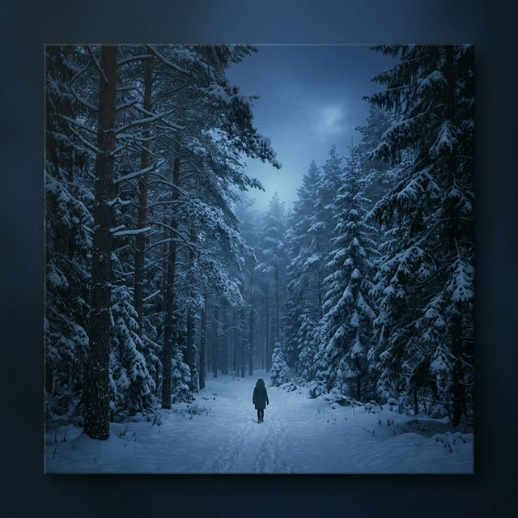

Soledad Que Tanto Me Places
Solitude That Pleases Me So Much
Одиночество, которое мне так нравится
Приємна самотність
Solitudine Che Tanto Mi Piace
如此让我愉悦的孤独
وحدة التي تروق لي كثيرًا
Angenehme Einsamkeit
Plaisante solitude
心地よい孤独
Prazenteira solidão
En el tranquilo abrazo de la soledad, donde los pinos verdes susurran secretos del alma.
In the tranquil embrace of solitude, where the green pines whisper secrets of the soul.
В тихом объятии одиночества, где зеленые сосны шепчут тайны души.
У спокійних обіймах самотності, де зелені сосни шепочуть таємниці душі.
Nell'abbraccio tranquillo della solitudine, dove i pini verdi sussurrano segreti dell'anima.
在孤独的宁静怀抱中，绿色的松树低语着灵魂的秘密。
في حضن الوحدة الهادئة، حيث تهمس أشجار الصنوبر الخضراء بأسرار الروح.
In der ruhigen Umarmung der Einsamkeit, wo die grünen Kiefern Geheimnisse der Seele flüstern.
Dans l'étreinte tranquille de la solitude, où les pins verts murmurent les secrets de l'âme.
孤独の穏やかな抱擁の中で、緑の松が魂の秘密をささやきます。
No abraço tranquilo da solidão, onde os pinheiros verdes sussurram segredos da alma.
Soledad Que Tanto Me Places
Tranquila poesía de un día soleado
Donde todo parece ralentizado
Donde todo se mece en la caricia del aire suave
Donde el verde pinar me da su clave.
Donde todo parece ralentizado
Donde todo se mece en la caricia del aire suave
Donde el verde pinar me da su clave.
Verde oloroso, verde pino
Verde musgo, verde oro
Verde triste, verde alegre
Verde eterno, verde sonoro
Verde sombra, verde grave
Verde solo acompañado
Soledad verde y tranquila
Espíritu acompasado
Placentera soledad.
Verde musgo, verde oro
Verde triste, verde alegre
Verde eterno, verde sonoro
Verde sombra, verde grave
Verde solo acompañado
Soledad verde y tranquila
Espíritu acompasado
Placentera soledad.
Solitude That Pleases Me So Much
Tranquil poetry of a sunny day
Where everything seems slowed down
Where everything sways in the caress of the soft air
Where the green pine gives me its key.
Where everything seems slowed down
Where everything sways in the caress of the soft air
Where the green pine gives me its key.
Fragrant green, pine green
Moss green, gold green
Sad green, happy green
Eternal green, sonorous green
Shadow green, grave green
Green only accompanied
Green and tranquil solitude
Measured spirit
Pleasant solitude.
Moss green, gold green
Sad green, happy green
Eternal green, sonorous green
Shadow green, grave green
Green only accompanied
Green and tranquil solitude
Measured spirit
Pleasant solitude.
Одиночество, которое мне так нравится
Спокойная поэзия солнечного дня,
Где всё кажется замедленным,
Где всё качается в ласке нежного воздуха,
Где зеленый сосновый бор дает мне свой ключ.
Где всё кажется замедленным,
Где всё качается в ласке нежного воздуха,
Где зеленый сосновый бор дает мне свой ключ.
Душистая зелень, сосновая зелень,
Мховая зелень, золотая зелень,
Грустная зелень, веселая зелень,
Вечная зелень, звучная зелень,
Теневая зелень, серьезная зелень,
Зелень только в сопровождении,
Зеленое и спокойное одиночество,
Размеренный дух,
Приятное одиночество.
Мховая зелень, золотая зелень,
Грустная зелень, веселая зелень,
Вечная зелень, звучная зелень,
Теневая зелень, серьезная зелень,
Зелень только в сопровождении,
Зеленое и спокойное одиночество,
Размеренный дух,
Приятное одиночество.
Приємна самотність
Спокійна поезія сонячного дня,
Де все здається сповільненим,
Де все гойдається в ласці ніжного повітря,
Де зелений сосновий бір дає мені свій ключ.
Де все здається сповільненим,
Де все гойдається в ласці ніжного повітря,
Де зелений сосновий бір дає мені свій ключ.
Ароматна зелень, соснова зелень,
Мохово-зелена, золото-зелена,
Сумна зелень, весела зелень,
Вічна зелень, звучна зелень,
Тіниста зелень, серйозна зелень,
Зелень лише в супроводі,
Зелена і спокійна самотність,
Ритмічний дух,
Приємна самотність.
Мохово-зелена, золото-зелена,
Сумна зелень, весела зелень,
Вічна зелень, звучна зелень,
Тіниста зелень, серйозна зелень,
Зелень лише в супроводі,
Зелена і спокійна самотність,
Ритмічний дух,
Приємна самотність.
Solitudine Che Tanto Mi Piace
Poesia tranquilla di un giorno soleggiato
Dove tutto sembra rallentato
Dove tutto dondola nella carezza dell'aria dolce
Dove il verde pino mi dà la sua chiave.
Dove tutto sembra rallentato
Dove tutto dondola nella carezza dell'aria dolce
Dove il verde pino mi dà la sua chiave.
Verde profumato, verde pino
Verde muschio, verde oro
Verde triste, verde felice
Verde eterno, verde sonoro
Verde ombra, verde grave
Verde solo accompagnato
Solitudine verde e tranquilla
Spirito misurato
Piacevole solitudine.
Verde muschio, verde oro
Verde triste, verde felice
Verde eterno, verde sonoro
Verde ombra, verde grave
Verde solo accompagnato
Solitudine verde e tranquilla
Spirito misurato
Piacevole solitudine.
如此让我愉悦的孤独
阳光明媚的日子里的宁静诗篇
一切似乎都慢了下来
一切都在柔和的空气抚摸中摇摆
绿色的松树给了我它的钥匙。
一切似乎都慢了下来
一切都在柔和的空气抚摸中摇摆
绿色的松树给了我它的钥匙。
芬芳的绿色，松绿色
苔藓绿，金绿
悲伤的绿色，快乐的绿色
永恒的绿色，洪亮的绿色
阴影绿，严肃绿
只有陪伴的绿色
绿色和宁静的孤独
测量的精神
愉快的孤独。
苔藓绿，金绿
悲伤的绿色，快乐的绿色
永恒的绿色，洪亮的绿色
阴影绿，严肃绿
只有陪伴的绿色
绿色和宁静的孤独
测量的精神
愉快的孤独。
وحدة التي تروق لي كثيرًا
شعر هادئ ليوم مشمس
حيث يبدو كل شيء متباطئًا
حيث يتأرجح كل شيء في لمسة الهواء الناعم
حيث يمنحني الصنوبر الأخضر مفتاحه.
حيث يبدو كل شيء متباطئًا
حيث يتأرجح كل شيء في لمسة الهواء الناعم
حيث يمنحني الصنوبر الأخضر مفتاحه.
أخضر معطر، أخضر الصنوبر
أخضر الطحالب، أخضر الذهب
أخضر حزين، أخضر سعيد
أخضر أبدي، أخضر جهير
ظل أخضر، أخضر خطير
أخضر فقط برفقة
وحدة خضراء وهادئة
روح مقاسة
وحدة ممتعة.
أخضر الطحالب، أخضر الذهب
أخضر حزين، أخضر سعيد
أخضر أبدي، أخضر جهير
ظل أخضر، أخضر خطير
أخضر فقط برفقة
وحدة خضراء وهادئة
روح مقاسة
وحدة ممتعة.
Angenehme Einsamkeit
Ruhige Poesie eines sonnigen Tages,
Wo alles verlangsamt scheint,
Wo alles im Liebkoisen der sanften Luft schwingt,
Wo der grüne Kiefernwald mir seinen Schlüssel gibt.
Wo alles verlangsamt scheint,
Wo alles im Liebkoisen der sanften Luft schwingt,
Wo der grüne Kiefernwald mir seinen Schlüssel gibt.
Duftendes Grün, Kieferngrün,
Moosgrün, Goldgrün,
Trauriges Grün, fröhliches Grün,
Ewiges Grün, tönendes Grün,
Schattengrün, ernstes Grün,
Grün nur begleitet,
Grüne und ruhige Einsamkeit,
Im Takt des Geistes,
Angenehme Einsamkeit.
Moosgrün, Goldgrün,
Trauriges Grün, fröhliches Grün,
Ewiges Grün, tönendes Grün,
Schattengrün, ernstes Grün,
Grün nur begleitet,
Grüne und ruhige Einsamkeit,
Im Takt des Geistes,
Angenehme Einsamkeit.
Plaisante solitude
Tranquille poésie d'un jour ensoleillé,
Où tout semble ralenti,
Où tout se balance dans la caresse de l'air doux,
Où la pinède verte me donne sa clé.
Où tout semble ralenti,
Où tout se balance dans la caresse de l'air doux,
Où la pinède verte me donne sa clé.
Vert odorant, vert pin,
Vert mousse, vert or,
Vert triste, vert joyeux,
Vert éternel, vert sonore,
Vert ombre, vert grave,
Vert seulement accompagné,
Solitude verte et tranquille,
Esprit cadencé,
Plaisante solitude.
Vert mousse, vert or,
Vert triste, vert joyeux,
Vert éternel, vert sonore,
Vert ombre, vert grave,
Vert seulement accompagné,
Solitude verte et tranquille,
Esprit cadencé,
Plaisante solitude.
心地よい孤独
晴れた日の穏やかな詩、
すべてがゆっくりと感じられる場所、
柔らかな空気の愛撫にすべてが揺れる場所、
緑の松林が私にその鍵をくれる場所。
すべてがゆっくりと感じられる場所、
柔らかな空気の愛撫にすべてが揺れる場所、
緑の松林が私にその鍵をくれる場所。
香る緑、松の緑、
苔の緑、金の緑、
悲しい緑、幸せな緑、
永遠の緑、響き渡る緑、
影の緑、厳かな緑、
ただ寄り添う緑、
緑の穏やかな孤独、
調和した精神、
心地よい孤独。
苔の緑、金の緑、
悲しい緑、幸せな緑、
永遠の緑、響き渡る緑、
影の緑、厳かな緑、
ただ寄り添う緑、
緑の穏やかな孤独、
調和した精神、
心地よい孤独。
Prazenteira solidão
Tranquila poesia de um dia ensolarado,
Onde tudo parece desacelerado,
Onde tudo se balança na carícia do ar suave,
Onde o pinhal verde me dá sua chave.
Onde tudo parece desacelerado,
Onde tudo se balança na carícia do ar suave,
Onde o pinhal verde me dá sua chave.
Verde cheiroso, verde pino,
Verde musgo, verde ouro,
Verde triste, verde alegre,
Verde eterno, verde sonoro,
Verde sombra, verde grave,
Verde apenas acompanhado,
Solidão verde e tranquila,
Espírito acompassado,
Prazenteira solidão.
Verde musgo, verde ouro,
Verde triste, verde alegre,
Verde eterno, verde sonoro,
Verde sombra, verde grave,
Verde apenas acompanhado,
Solidão verde e tranquila,
Espírito acompassado,
Prazenteira solidão.
Canciones del Poema Песни до стихотворения Пісні до вірша Poem Songs
Versión Castellano
Spanish Version
Испанская версия
Іспанська версія
Versione Spagnola
西班牙语版本
النسخة الإسبانية
Spanische Version
Version Espagnole
スペイン語版
Versão Espanhola
Пас Арес Оссет
Пас Арес Оссет
Paz Arés Osset
Paz Arés Osset
Paz Arés Osset
Paz Arés Osset
Paz Arés Osset
Paz Arés Osset
Paz Arés Osset
Paz Arés Osset
Paz Arés Osset
Spotify

Versión Rusa
Russian Version
Русская версия
Російська версія
Versione Russa
俄语版本
النسخة الروسية
Russische Version
Version Russe
ロシア語版
Versão Russa
Пас Арес Оссет
Пас Арес Оссет
Paz Arés Osset
Paz Arés Osset
Paz Arés Osset
Paz Arés Osset
Paz Arés Osset
Paz Arés Osset
Paz Arés Osset
Paz Arés Osset
Paz Arés Osset
Spotify